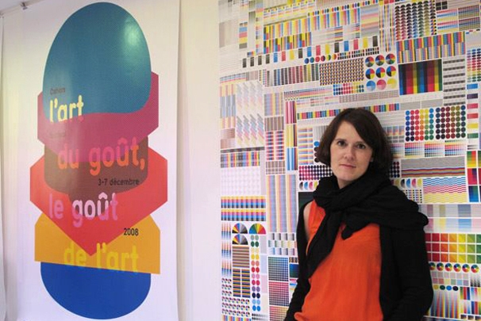

She studied Graphic Design at the École supérieure des arts decoratifs in Strasbourg, graduating in 2000. Her main activities revolve around typography, layout and the printed object, and she works on both commissioned and self-initiated projects.

Fanette Mellier
French graphic designer and artist
"The color is fundamental to my work. I use it functionally (classification, hierarchy of content) and poetic. Often the forms I create are very geometric, rigid, organized. Plasticity and poetry involved with color, that flows through these forms, sometimes freely and randomly when I leave an element of chance in printing. But I can also say that it is invested differently in different projects related to the content."